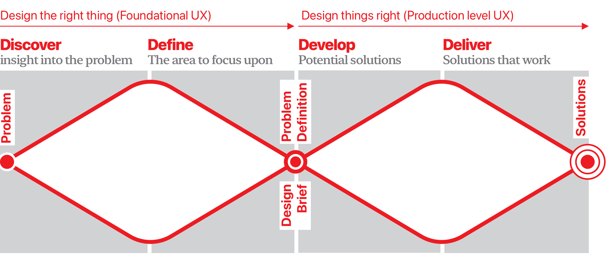

UX Design is a process of moving from being presented with a problem to providing the end-user with a solution that meets their actual (as opposed to perceived) needs.
Design Thinking is a range of practices and methods for developing solutions to problems, codified into a series of steps - an articulated design process that involves the human perspective in the problem-solving process. There are many variations of Design Thinking, although they are all geared towards gaining a common understanding through following the cycle below:
Put yourself under your users' skin and see their perspective on the system. Understand the reasons and goals behind its usage and the emotional response it is causing.
Define what insight you've gathered into your users' needs and problems. Specify which pain points have to be addressed and outline the priorities.
Once you've identified the right problem to solve, generate a broad set of ideas for innovative solutions with no attempt to judge or evaluate them.
Evaluate your ideas and start shaping up the solutions. Produce prototypes that can be put in front of people to test and critique each concept.
Test and refine ideas by gathering feedback and iteratively experimenting on the prototypes. Ensure that the solution you're outputting solves all of the users' problems you identified along the way.
Lean UX Design is the principle of evaluating a user requirement, devising a solution, and doing just enough work to convey that solution by way of a prototype. This prototype can then be tested and adjusted to ensure that it answers the needs of the user, and can therefore be progressed towards a finished product.
Research is conducted with users to define the issues they face and requirements they have for the given situation.
The team takes the findings from the research and defines the user requirements from them.
The team then devises a solution to help address that requirement, and notes the assumptions that they are making in the solution.
The team then create a prototype for testing, using just enough effort to ensure that the assumptions they need to test can be tested.
They then put it in front of users, asking them questions to see if they can understand and use it, observing if the assumptions are correct.
The team take what they have learned from the testing, refine and adapt their prototype, and arrange for further rounds of testing, if required.